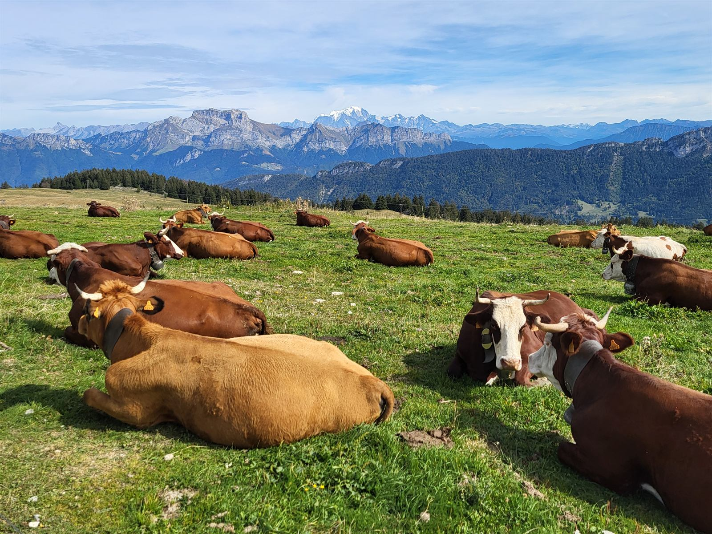
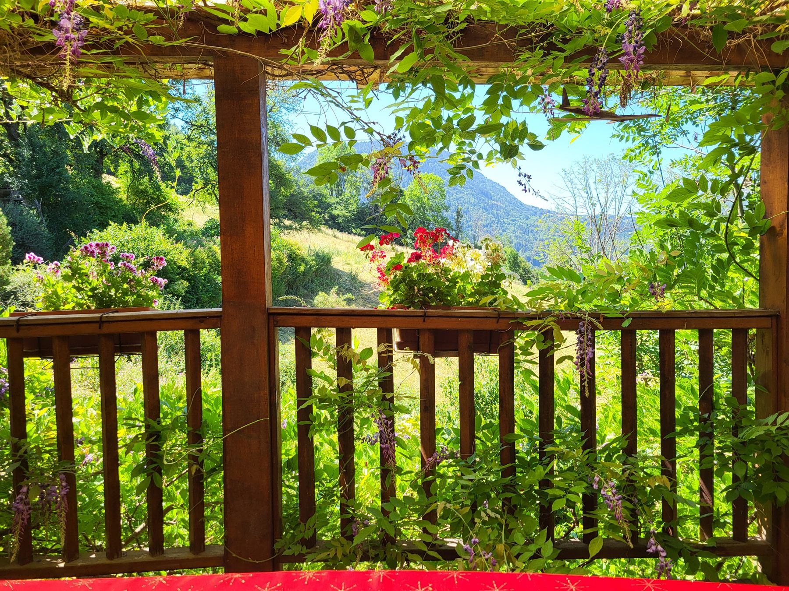

Comment se passent les journées ?
La marche le matin, un déjeuner partagé, des ateliers en salle l’après-midi, puis du temps pour vous. Pas besoin d’être sportif : la marche est un support, pas un défi.

Accueil · Stages collectifs
Trois jours pour explorer une thématique, expérimenter et avancer ensemble.
Des stages de développement personnel en petits groupes. Au programme : des marches dans les Bauges, des exercices de coaching, des expériences créatives, des temps de réflexion personnelle et la richesse des échanges. Chaque stage est construit autour d’une thématique qui fait écho à vos questionnements.
Choisissez la thématique qui fait écho à ce que vous vivez. Chaque page détaille le programme des trois jours, les expériences proposées et les infos pratiques.
Quand les sollicitations extérieures prennent trop de place, il devient parfois difficile de savoir ce que nous voulons vraiment. Trois jours pour vous recentrer, retrouver vos repères et renouer avec votre liberté de choisir.
Découvrir ce stage
Vous réfléchissez beaucoup, vous analysez, vous anticipez... mais vous avez parfois du mal à écouter ce que vous ressentez. Trois jours pour ralentir, renouer avec vos émotions et vous rapprocher de vos besoins et de vos désirs.
Découvrir ce stage
Vous portez un rêve ou un projet qui vous attire, mais quelque chose vous empêche encore de l'explorer pleinement. Trois jours pour lui redonner de la place, regarder les obstacles autrement et découvrir comment commencer à le rendre possible.
Découvrir ce stage
Le monde change vite. Ces transformations peuvent susciter des questions, des inquiétudes, mais aussi ouvrir de nouvelles possibilités. Trois jours pour prendre du recul, développer vos capacités d'adaptation et agir avec davantage de confiance et de discernement.
Découvrir ce stage
La retraite ouvre un nouveau chapitre, riche de possibilités mais aussi de questionnements. Trois jours pour honorer le chemin parcouru, imaginer ce qui vous attend et construire une nouvelle étape de vie qui vous ressemble.
Découvrir ce stageJ’organise aussi des stages avec d’autres professionnels, sur d’autres formats, pas toujours en marchant. Dates, lieu et modalités sont précisés pour chacun.

La marche le matin, un déjeuner partagé, des ateliers en salle l’après-midi, puis du temps pour vous. Pas besoin d’être sportif : la marche est un support, pas un défi.

Le Refuge des Possibles, un à trois jours rien que pour vous, ou des séances individuelles ponctuelles.